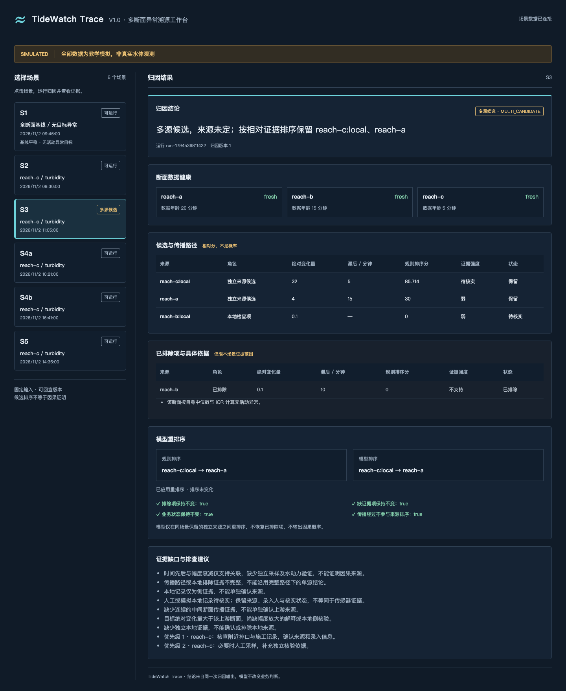
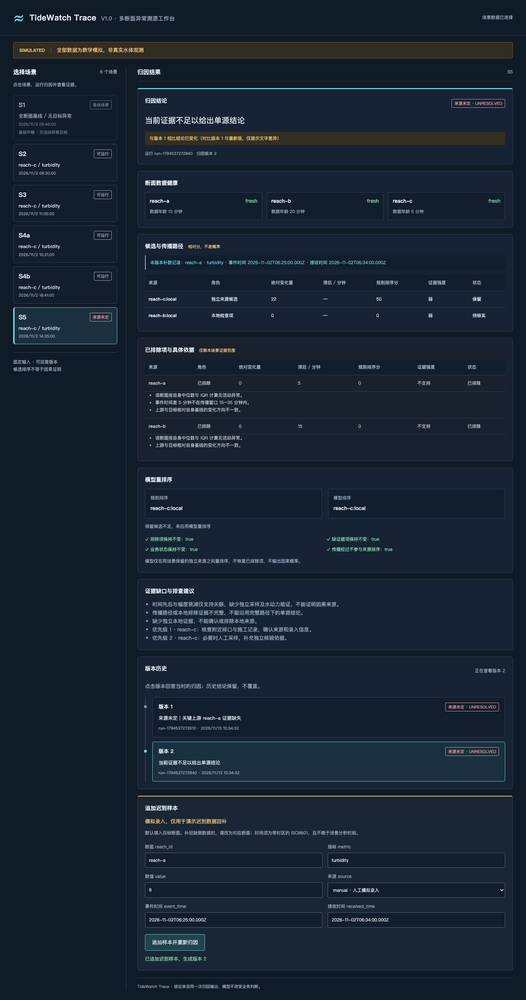
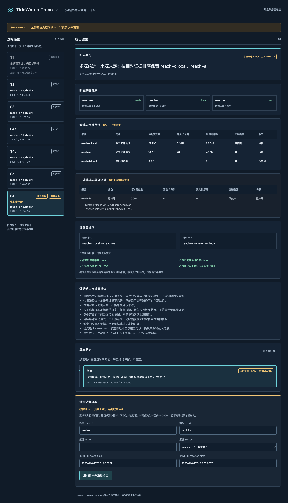

面向园区水系的多断面异常溯源与排查辅助系统
同样的浊度上升可能来自上游传播，也可能与本地活动有关。系统比较每个断面的自身历史基线，检查时序、拓扑和本地记录，输出候选、排除依据、证据缺口与排查建议，供人工核查。
| 解决的问题 | 明确不做 |
|---|---|
| 多断面观测如何支持候选筛查 | 不预测未来污染或扩散浓度 |
| 传播经过如何区别于独立来源 | 不将时间先后或曲线相似当作因果证明 |
| 缺测与迟到数据如何留痕、复查 | 不在缺证据时强行给出唯一来源 |
| 规则与模型排序如何解释 | 不输出因果概率，不由模型改写业务判断 |
实现入口：backend/baseline.py · attribution.py · store.py · trace_runner.py · reranker.py · api.py
判定链不跨越证据边界：先验证异常与数据健康，再验证传播，最后对保留来源排序。
按 reach_id + metric 分组计算中位数、Q1、Q3 与 IQR=Q3−Q1；当 |偏离度| 大于配置阈值时判断异常。禁止用统一原始水位或浊度阈值替代各断面基线。零 IQR 时使用配置 min_noise 作为分母，记录 fallback=minimum_noise；观测 IQR 仍为 0，不随机扰动数据。
| 判定 | 当前实现 |
|---|---|
| 时间差 | 目标 event_time − 上游 event_time；窗口含端点，不用 received_time 代替传播时间 |
| S2 示例窗口 | A→C：15～35 分钟；B→C：8～20 分钟 |
| 健康状态 | 按 analysis_time 检查 fresh / stale / missing，阈值取场景配置 |
| 逆向候选 | 沿 A→B→C 拓扑向上游生成 A、B，并生成中间/目标断面的本地检查项 |
| 排除依据 | 无自身异常、方向不一致、窗口不符等记录到 exclude_basis；排除只限本场景证据范围 |
完整拓扑、逐段及直达目标的时间窗口成立，变化方向一致，幅度满足配置传播模型，且没有独立本地记录支持中间断面时，B 标记 propagation_path / propagation，保留展示但不参与独立来源排序。
S2 默认逐段幅度衰减；S4 使用 source_envelope：下游变化量不超过源头变化量加配置的实测 IQR 噪声容差。S4a 允许中间衰减后回升，不能误写为每一步均严格衰减。
来源：backend/baseline.py、backend/attribution.py；窗口示例：data/trace_scenarios.json 的 S2。
| 案例与触发条件 | 期望与证据真实摘录 |
|---|---|
| S1 基线 各断面当前值位于自身历史正常波动范围，无目标异常。 | 无活动异常；active_anomalies=[]。 工作台卡片禁用，使用 baseline CLI 验证。 |
| S2 单一上游 A/B/C 浊度 80/40/25；历史中位数 6/12/24。A 最早，时间窗口成立，无本地记录。 | 证据支持单源reach-a（中等证据；非因果证明） 绝对变化量 74 → 28 → 1；A 为独立候选，B 为 propagation_path。 |
| S3 多候选 A 与 C 本地都有可保留证据；C=40、中位数=8、绝对变化量=32，本地记录待核实。 | MULTI_CANDIDATE 多源候选，来源未定；按相对证据排序保留 reach-c:local、reach-a |

来源：evidence/trace_s1_04_s1_output.json、trace_s2_04_s2_output.json、trace_s3_output.json。S2 文件为阶段历史输出，未包含当前顶层 status；此处引用其原文，不补造字段。
| 案例与触发条件 | 期望与证据真实摘录 |
|---|---|
| S4 同现象不同来源 A/B/C 基线中位数 6/5/8。 S4a：24/15/27，无施工记录；S4b：7/6/26，有 pending 施工记录。 | S4a：证据支持单源reach-a（强证据；非因果证明） S4b：证据支持本地来源reach-c:local（中等证据；施工记录仍待核实，非因果证明） |
| S5 缺证据 / 回补 A 当前样本缺失；C=30、中位数=8、绝对变化量=22。补回 A=6 的新鲜正常样本。 | 版本 1：UNRESOLVED；来源未定｜关键上游 reach-a 证据缺失 版本 2：UNRESOLVED；当前证据不足以给出单源结论 |

来源：evidence/trace_s4_output.json、trace_s5_output.json、trace_api_s5_evidence.json。
不覆盖旧观测，不覆盖旧结论；用事件时间组织样本，用版本号组织判断。
| 表 | 主要字段与约束 | 用途 |
|---|---|---|
| samples | id PK；reach_id / metric / value；event_time / received_time / source；anomaly_id；version；UNIQUE(reach_id, metric, event_time, version) | 同一事件时刻数值变更追加样本版本 |
| anomalies | anomaly_id PK；reach_id / metric / event_time / value；first_detected_at；current_version | 异常标识与下一个待用归因版本号 |
| attributions | id PK；run_id UNIQUE；anomaly_id / version；analysis_time / status / conclusion；input_snapshot / output_json；created_at；UNIQUE(anomaly_id, version) | 保存输入快照与完整原输出，追加归因版本 |
| runs | run_id PK；scenario_id / anomaly_id / attribution_version；started_at / finished_at；status / error_message | running → success / failed 的 Run Trace |
SQLite 采用标准库 sqlite3；带时区时间归一化为 UTC。get_samples 按 event_time 排序，支持 before 截止时间查询；同断面/指标/事件时刻的不同值追加新 version。运行器对相同事件时间和值跳过重复写入。
补数接口在原场景内存副本中替换该断面/指标的当前观测，重新计算并保存版本；数据库旧样本和旧结论保留，不沿用 C02 的迟到丢弃机制。归因算法本身不自动从库读取或重放历史。
| S5 真实版本链 | 保存状态 | 结论 |
|---|---|---|
| run → 版本 1 | UNRESOLVED | 来源未定｜关键上游 reach-a 证据缺失 |
| 补回 A → 版本 2 | UNRESOLVED | 当前证据不足以给出单源结论 |
input_snapshot 实际只保存 history_samples、current_samples、target，未保存完整配置、代码和历史模型。原归因输出可回查；历史 rerank 查询用当前缓存模型重算，不能声称是历史模型回放。接口也不会自动合并全部历次补数形成完整时序重放。
来源：backend/store.py、backend/trace_runner.py、backend/api.py；双版本证据：evidence/trace_api_s5_evidence.json（version_count=2）。
纯 Python 逻辑回归，不使用 numpy / sklearn。只有 retained 且 independent_source 的候选进入同一排序池；excluded、missing_evidence、propagation_path 不进池，少于两个候选跳过。status、conclusion、证据等级和排除依据保持原样。
| 六维特征（固定顺序） | 来自 analyze_attribution 的字段 / 变换 |
|---|---|
| time | score_components.time：时间窗口匹配分量 |
| absolute_change | score_components.absolute_change：相对幅度分量 |
| topology | score_components.topology：拓扑分量 |
| local_evidence | score_components.local_evidence：本地证据分量 |
| log1p(absolute_change_value) | 对候选 absolute_change（真实变化量）取 log1p |
| time_lag_minutes | 候选 event_time 滞后；缺失时用同场景可观测均值，不静默填 0 |
先按场景补缺，再筛选排序池；只用 train 的均值/标准差进行标准化，test 复用参数。固定 seed，L2 正则；label、来源 ID、场景 ID、状态与角色不作为模型特征。特征贡献=标准化系数×标准化特征，logit=截距+各贡献之和。
single_upstream / decoy_local / decoy_upstream 三族各 200 场景，按每族 seed 的前 80% / 后 20% 做场景级切分。train：480 场景、960 行；test：120 场景、240 行。行数包含传播经过负例；测试排序池为 200 个保留独立候选，其中 40 场景仅一个候选。另四族 800 场景只作契约校验。
| 策略 | 整体 top-1 | MRR |
|---|---|---|
| rule | 0.666667 | 0.833333 |
| model | 1.000000 | 1.000000 |
| fusion | 1.000000 | 1.000000 |
| test family（各 40 场景） | 规则 top-1 | 模型 top-1 | 融合 top-1 |
|---|---|---|---|
| decoy_local | 0.000000 | 1.000000 | 1.000000 |
| decoy_upstream | 1.000000 | 1.000000 | 1.000000 |
| single_upstream | 1.000000 | 1.000000 | 1.000000 |
来源：evidence/model_comparison.json（生成于 2026-11-12T08:06:29.169370+00:00）、backend/reranker.py、scripts/train_reranker.py。
D1 是固定 seed 的自建 decoy_local 对照，不属于案例书 S1–S5。生成器注入真源为 A，C 本地为待核实记录干扰项。这里的“纠正”只相对于合成标签，不能解释为已确认真实来源。
| 候选 | 规则分 / 排名 | 模型相对分 / 排名 |
|---|---|---|
| reach-c:local | 62.047882 / 1 | 0.033960 / 2 |
| reach-a | 48.712037 / 2 | 0.940621 / 1 |
规则：C 本地 → A 模型：A → C 本地 order_changed=true
业务状态仍为 MULTI_CANDIDATE；四项约束均为 true，结论不改写。
| 标准化特征贡献 | reach-a | reach-c:local |
|---|---|---|
| time | +1.863563 | -3.199226 |
| absolute_change | +0.191376 | -0.168932 |
| topology | +2.290940 | -2.290940 |
| local_evidence | -1.254608 | +2.509216 |
| log1p(absolute_change_value) | -0.111759 | +0.051010 |
| time_lag_minutes | -0.013363 | -0.045601 |
共同截距 -0.203549；A logit 2.762601，C 本地 logit -3.348021。表中仅为显示而四舍五入，完整精度见 JSON。A 的 topology/time 推高 logit；C 本地虽有正向本地证据贡献，但 time 贡献为负。共线性限制了独立解释。

来源：data/demo_decoy_scenario.json、evidence/rerank_contract.json 的 D1 条目与逐候选 contributions。
| 验证项 | 命令 / 范围 | 本次结果 |
|---|---|---|
| 全量 pytest | PYTHONPATH=. pytest tests -q | 127 passed, 1 warning in 4.51s |
| 旧 C02 规则 | python python/rules.py | 通过 4/4 |
| 基线 / 归因 | tests/test_trace.py | 基线隔离、零 IQR、绝对变化、S1–S5、传播窗口与确定性 |
| 持久化 / API | test_store / test_trace_runner / test_api | 追加版本、幂等样本、Run、错误状态、补数、证据与历史查询 |
| 模型 / 工作台 | test_simulate / test_reranker / test_rerank_contract / test_demo_scenario / test_workbench | split 不泄漏、确定性、模型序列化、硬约束、贡献与静态资源 |
2026-11-13 在仓库临时副本复跑，避免覆盖正式仓库生成物；Python 3.14.7。warning 为当前 Starlette TestClient 对 httpx 的弃用提示，不是测试失败。未以本次规则回归宣称已重验全部 MQTT/C02 实时链路。
| 脚本 | 产物 |
|---|---|
| scripts/generate_training_data.py | data/simulated_candidates.jsonl；simulated_contract.jsonl |
| scripts/train_reranker.py | models/reranker.json；evidence/model_comparison.json |
| scripts/export_decoy_scenario.py | data/demo_decoy_scenario.json（固定 seed） |
| scripts/export_trace_api_evidence.py | evidence/trace_api_s5_evidence.json（临时 SQLite） |
| scripts/export_rerank_contract.py | evidence/rerank_contract.json；total=6 / changed=1 / skipped=4 |
| scripts/export_tech_pdf.py | 本技术说明 PDF（由 file:// HTML 导出） |
复现入口与安装步骤：README.md、docs/reproduce.md。此处描述的是当前功能与验证边界，不将后续方向列为已实现能力。
| 主要目录 | 内容 |
|---|---|
| backend/ | 基线、归因、SQLite、运行编排、模型与 FastAPI |
| data/ / models/ | 固定案例与自建对照；JSONL 生成物；模型 JSON |
| web/workbench/ / python/ | Trace 静态工作台；保留的旧 C02 Python 模块 |
| scripts/ / tests/ | 生成、训练、导出与工程契约测试 |
| docs/ / evidence/ | 复现说明、阶段记录、真实输出与截图 |
| 文件（相对仓库根目录） | 报告用途 |
|---|---|
| evidence/trace_s1_04_s1_output.json | S1 无活动异常与真实基线计算 |
| evidence/trace_s2_04_s2_output.json | S2 上游来源、传播经过及本地排除 |
| evidence/trace_s3_output.json | S3 多候选与排查建议 |
| evidence/trace_s4_output.json | S4a / S4b 同现象不同来源 |
| evidence/trace_s5_output.json | S5 缺证据保持未定 |
| evidence/trace_run_s5_versions.json | SQLite 双版本归因记录 |
| evidence/trace_api_s5_evidence.json | 真实 API 双版本证据链与 Run Trace |
| evidence/model_comparison.json | 离线指标、系数与逐场景评估 |
| evidence/rerank_contract.json | 重排序硬约束、D1 前后排序与特征贡献 |
| evidence/workbench_s3.png | S3 工作台真实截图 |
| evidence/workbench_s5_v2.png | S5 版本 2 工作台真实截图 |
| evidence/workbench_d1.png | D1 自建对照真实截图 |
README.md：安装、启动与实际 API 表。docs/reproduce.md：命令、输出口径与常见问题。docs/model-reranking.md：离线特征与系数。docs/m0-baseline.md：M0 阶段记录。
阶段文档保留当时语境，如“reserved”“未接入在线”；当前能力以实现和当前测试为准。本报告使用既有截图，未将其当作本次浏览器重新验收证据。
报告由仓库 HTML 使用 Playwright/Chromium 导出；图片使用相对路径，无外部字体、图片或 CDN。